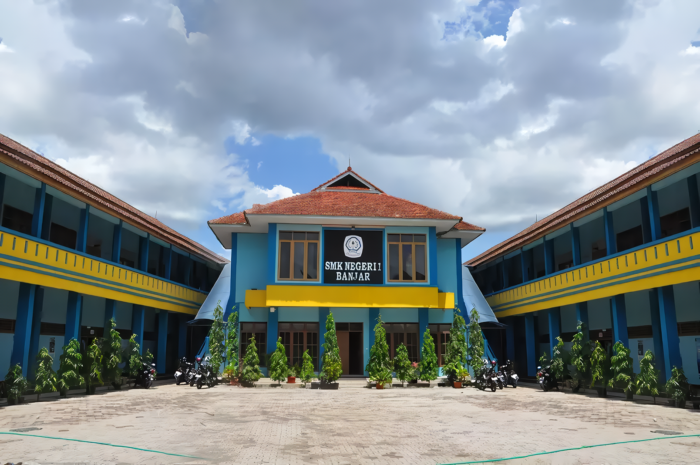

My Projects
Exploring My Creative Works
A Closer Look at My Creative World

SMKN 1 Banjar
View Project
Kanna-Fansite
View ProjectSoftware Engineering Student
Creating Innovative, Functional, and User-Friendly Websites for Digital Solutions
My Projects
Exploring My Creative Works
A Closer Look at My Creative World
SMKN 1 Banjar
View Project
Kanna-Fansite
View ProjectHello! My name is Fauzi, and I’m a Frontend Developer who loves bringing ideas to life through clean, interactive, and visually appealing websites. I focus on building responsive web pages using HTML, CSS, and JavaScript, ensuring that every design works smoothly across different devices and screen sizes.As a developer, I value clean code, accessibility, and performance. I believe that a good website should be fast, easy to navigate, and friendly to all users. I enjoy solving front-end challenges, experimenting with new design ideas, and constantly improving my skills through practice and research.
Skills
Education
Experiece